Us, Always 📸💞
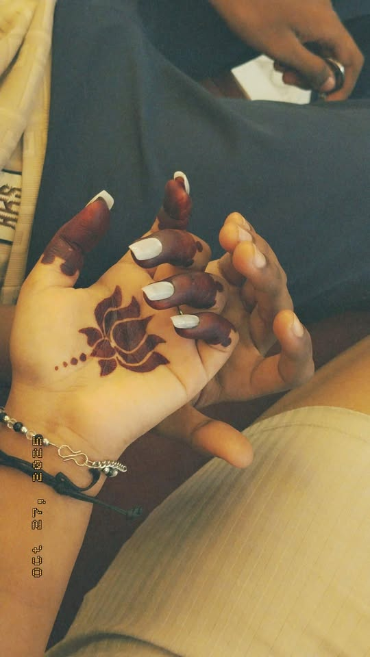
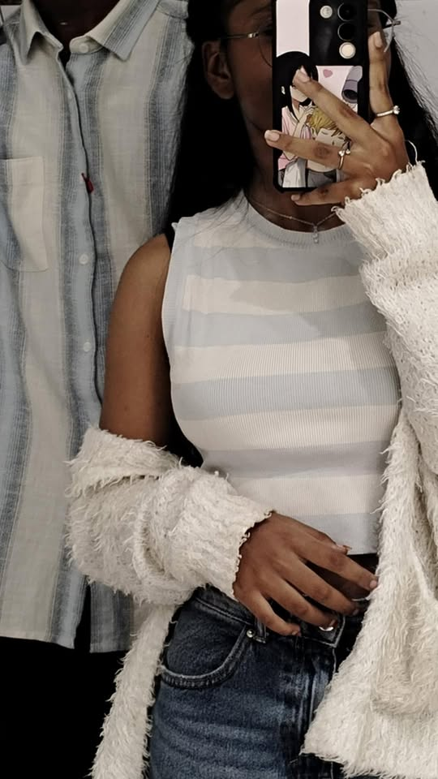
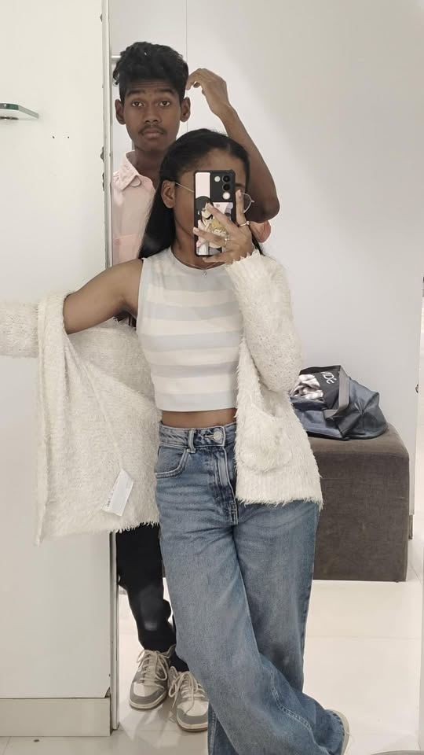
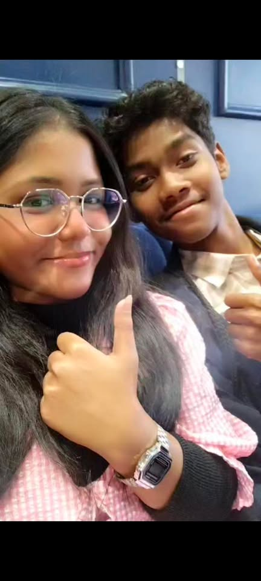
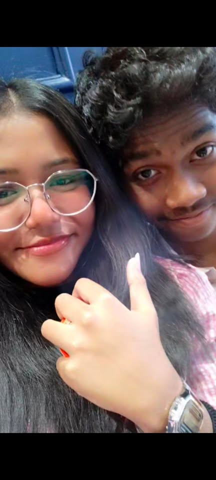
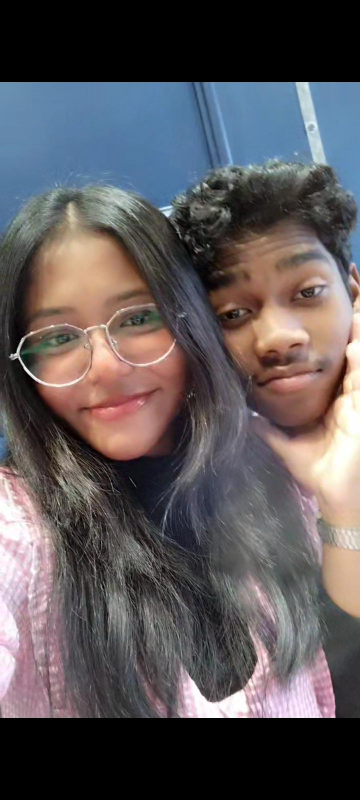
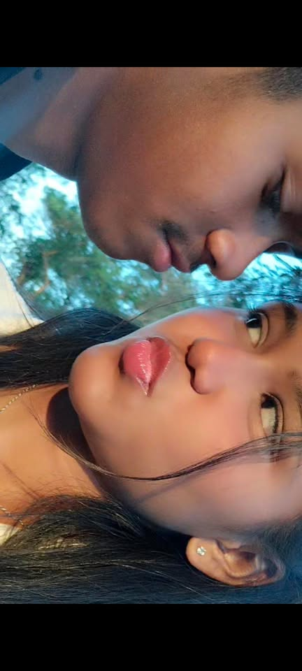
 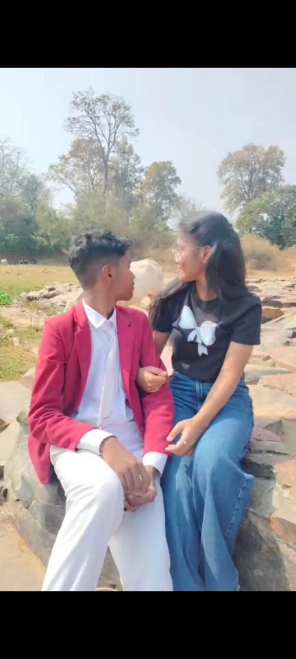
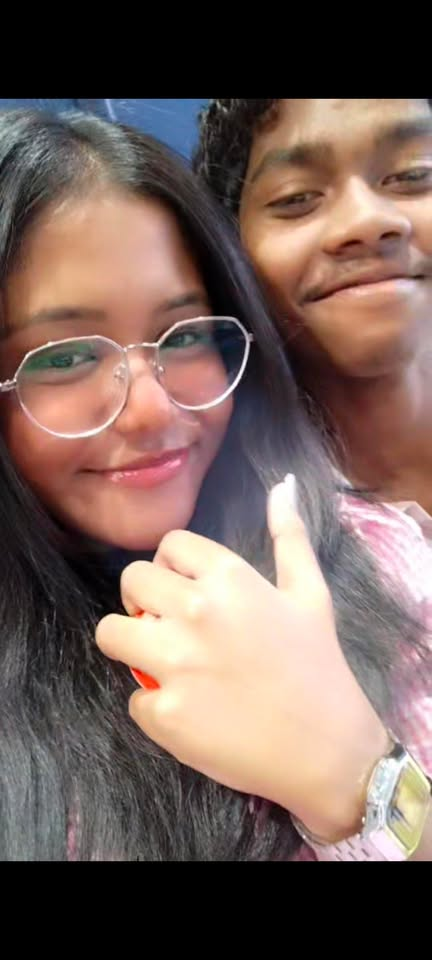
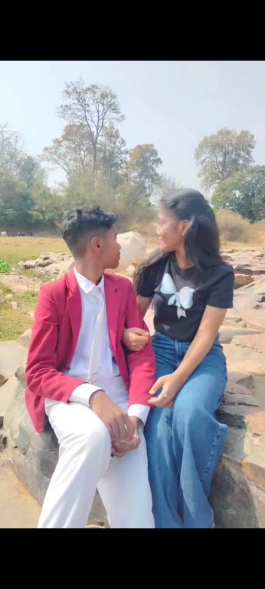
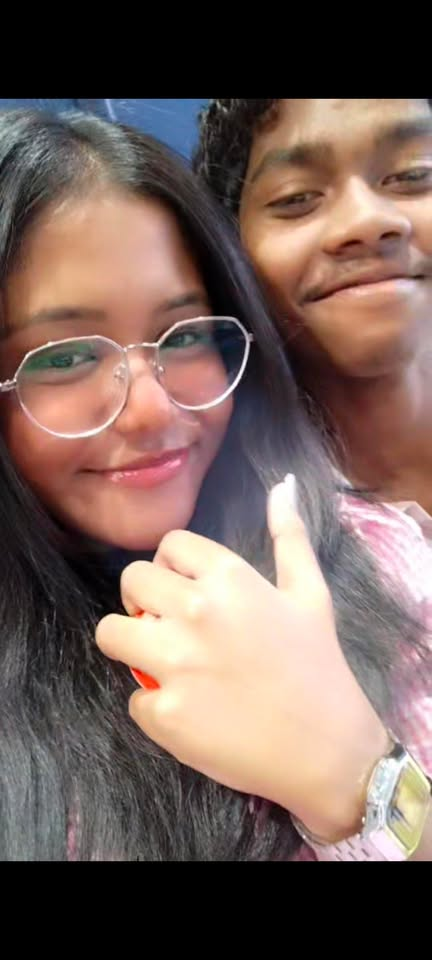
 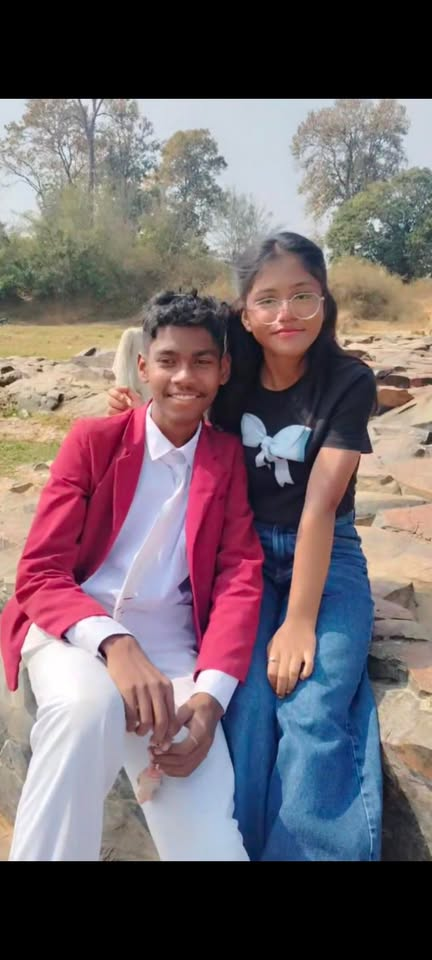
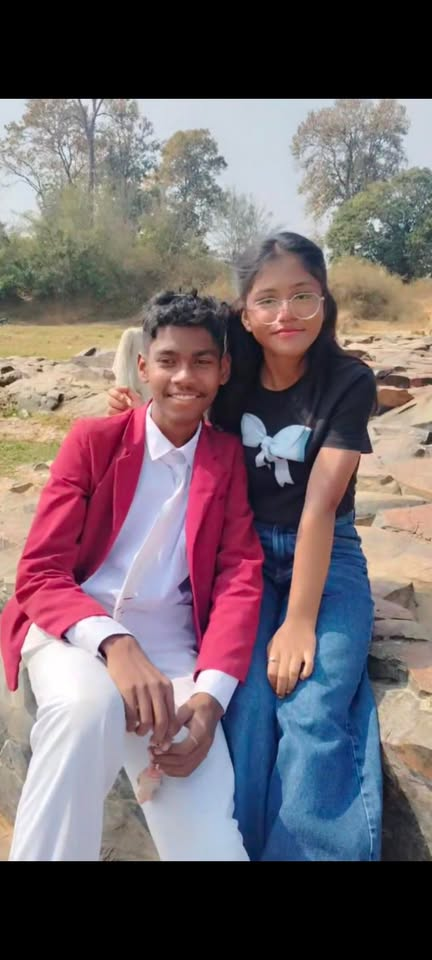
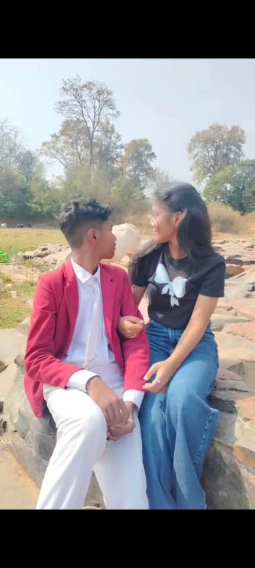
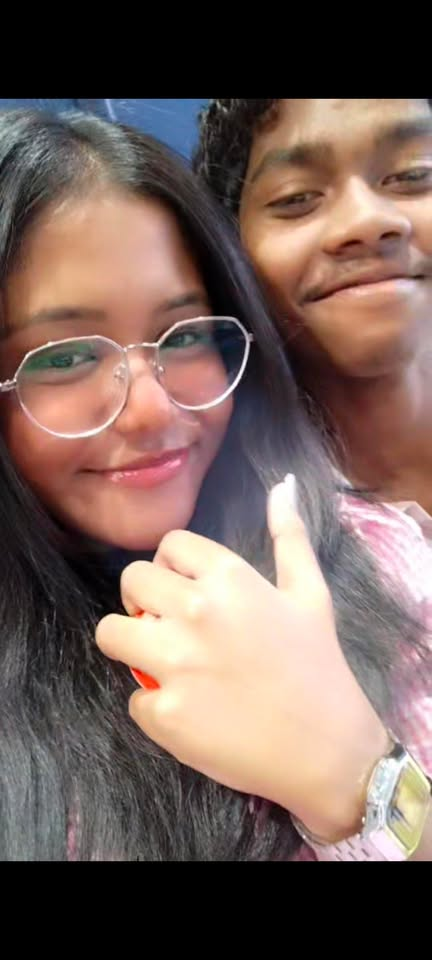
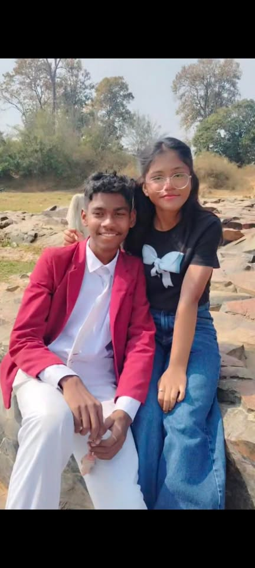
To the girl who owns my heart 🥺💗
Loving you is my favorite thing in this world. It isn’t just something I feel—it’s something I live, something that flows through every part of me 🤍. You are my comfort when life feels heavy, my quiet peace when the noise gets too loud, and my smile on days when I forget how to smile on my own. Somehow, without even trying, you turn my worst moments into softer ones just by being you. Your presence alone feels like reassurance, like a gentle hand on my heart reminding me that I’m not alone 🫶. Every time I look at you, I feel thankful—deeply, endlessly thankful—that love found me in you. Out of all the people, all the possibilities, all the paths this life could have taken, it led me to you 🥹✨. I see love in the smallest things you do, in the way you care, the way you listen, the way your eyes soften when you smile. You don’t just make me happy; you make me feel understood. With you, I don’t have to pretend, hide, or be anything other than who I am—and that is the most beautiful gift you’ve ever given me 🤍. I promise to love you gently on the hard days. On the days when the world feels unfair, when your heart feels tired, and when words fail you, I’ll be there—quietly, patiently, without rushing you 🌧️🤍. I’ll love you in the pauses, in the silences, in the moments when all you need is someone to stay. I’ll remind you of your strength when you forget it, and I’ll hold you when you feel like you’re falling apart. My love won’t demand anything from you on those days—it will simply be there, steady and safe. I promise to love you loudly on the happy days 💕. When you’re smiling, laughing, glowing, and full of light, I’ll celebrate you without holding back. I’ll be proud of you, cheer for you, and fall in love with you all over again every time your happiness shines through 🌟. I’ll laugh with you until our stomachs hurt, dance with you over nothing at all, and hold onto those moments as memories I’ll replay forever. Your joy is my joy, and seeing you happy feels like winning at life itself 🥰. And I promise to love you endlessly—in every way that truly matters ♾️💖. Not just when it’s easy, not just when things are perfect, but always. I’ll love you in the ordinary moments, in the routines, in the everyday softness of life. I’ll choose you in the little things—the good mornings, the good nights, the check-ins, the care that doesn’t always get noticed but means everything. My love won’t be temporary or fragile; it will be rooted, patient, and unwavering 🌱🤍. I don’t promise perfection, but I promise effort. I promise honesty, loyalty, and a heart that keeps choosing you, even when life challenges us. I promise to grow with you, to learn you more deeply with time, and to never stop appreciating the person you are becoming. With you, love isn’t about grand gestures alone—it’s about showing up, day after day, with the same devotion and sincerity 💞. You are my safe place, my favorite thought, and my forever intention. No matter where life takes us, my heart will always recognize yours. Loving you isn’t something I do occasionally—it’s who I am now, because of you. And if I had to choose again, in every lifetime and every universe, I would always choose you 🤍♾️💖.
I promise to love you gently on the hard days, loudly on the happy days, and endlessly in every way that truly matters ♾️💖.
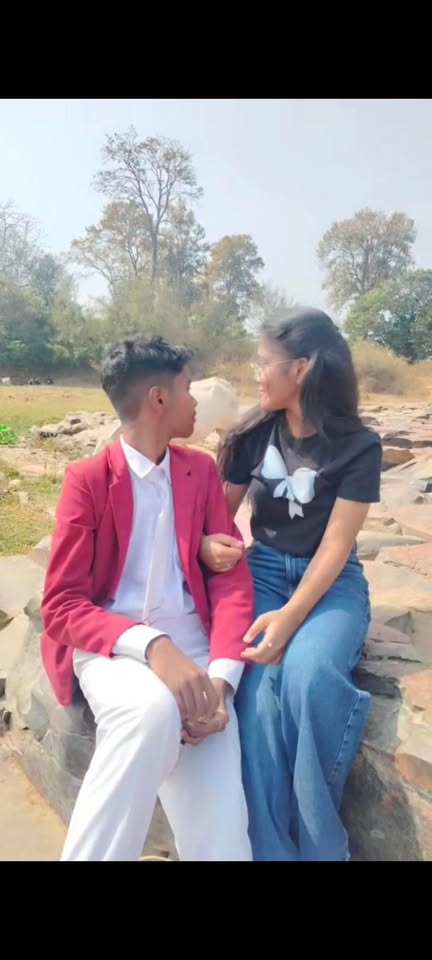
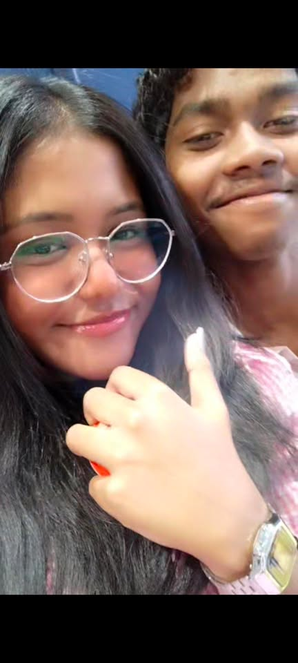
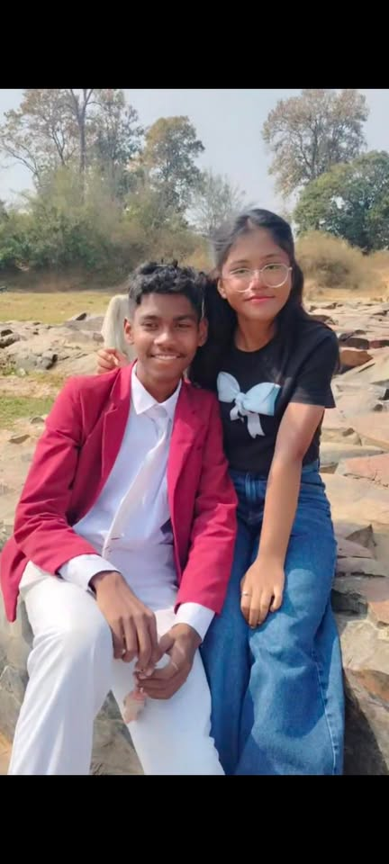
💗 The day we met — my life changed forever i start feeling happy for no reason enjoyes love genuanly for the first time
💬 Our first long talks & late-night chats feltt kinda home no one to mess around just uss and aur little world
📸 Our favorite memories together
💞 Falling deeper, day by day cause u the love of my life
♾️ And this is only the beginning…
No matter where life takes us, no matter what storms come our way, my heart will always choose you 🤍. In a world that is constantly changing, where nothing feels certain for long, you are the one truth my heart holds onto without hesitation. Even when the road ahead feels unclear, even when the days are heavy or the nights are long, my love for you remains steady—unchaken, unconditional, and real. You are my constant in the chaos, the calm that finds me when everything else feels overwhelming 🫶. Choosing you is not something I do once; it’s something I do every single day. I choose you in the quiet moments and in the loud ones, in the laughter and in the tears. I choose you when things are easy and especially when they are not. Through every misunderstanding, every challenge, and every test life places in front of us, my heart will always find its way back to yours 🤍✨. Loving you feels less like a decision and more like a truth my soul has always known. You are my safe place, the person I want beside me when the world feels too big and when it feels beautifully small. With you, even ordinary moments feel meaningful. A simple conversation, a shared smile, a moment of silence—everything carries more warmth because it’s shared with you 🥹💖. You make life feel gentler, brighter, and more worth believing in. I don’t promise a life without storms, but I promise I’ll stand with you through every one of them 🌧️🤍. I’ll hold your hand when the waves are high and remind you that you are never facing anything alone. My love will be your shelter, your reassurance, and your strength when you need it most. So I ask you this with all my heart, with all the love I carry for you: will you be my Valentine today, tomorrow, and forever? 🥺💖 Not just for a day marked on a calendar, but for every sunrise, every season, and every lifetime we get to share. I choose you now, I will choose you always, and my heart will keep choosing you for as long as it knows how to love 🤍♾️💞.
• Your smile 💕
• The way you care 🫶
• How safe I feel with you 🤍
• how u love me
• ur presence make mee feel light
• everything just everything